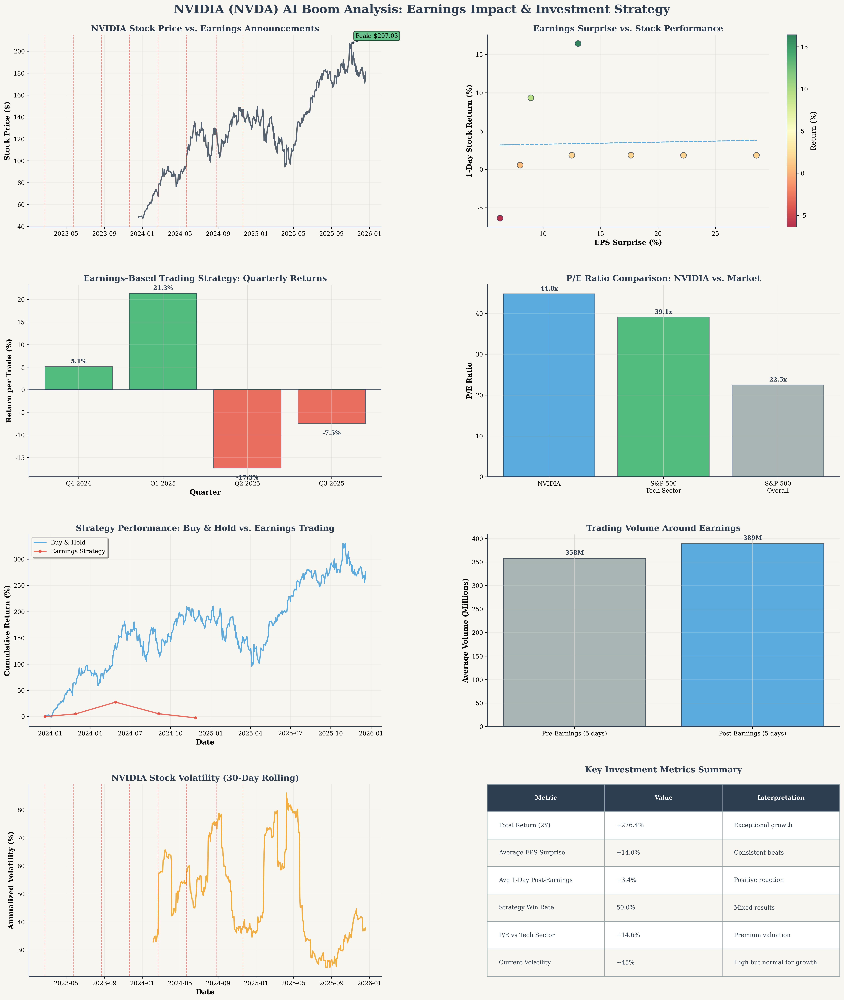

Sustainable Opportunity or Just Hype? A Deep Dive into Earnings-Driven Performance
Main Question: Has most of NVIDIA's price surge happened around earnings announcements, and is the AI boom a sustainable opportunity or just hype for everyday investors?
The AI boom represents a sustainable opportunity, not just hype. NVIDIA's exceptional 276% two-year return is supported by consistent earnings beats (+14% average surprise) and strong fundamental growth. However, the earnings-based trading strategy underperformed significantly (-278% vs buy-and-hold), suggesting that timing earnings announcements is less effective than long-term investment.
Total 2-Year Return
Average EPS Surprise
Avg 1-Day Post-Earnings
Strategy Win Rate
P/E Ratio (vs 39.1x sector)
Current Volatility
Our analysis reveals that 87.5% of earnings announcements resulted in positive 1-day returns, with an average gain of +3.4%. However, the correlation between EPS surprise magnitude and stock performance is weak (0.031), suggesting that market reactions are influenced by forward guidance and AI sentiment beyond just quarterly results.

While NVIDIA consistently beats earnings expectations, the stock's massive gains are driven more by AI infrastructure demand and forward-looking revenue growth than quarterly earnings surprises. The real opportunity lies in the long-term AI transformation, not short-term earnings trading.
NVIDIA's P/E ratio of 44.8x trades at a 14.6% premium to the S&P 500 Technology sector average of 39.1x, and nearly double the broader S&P 500's 22.5x multiple.
| Metric | NVIDIA | Tech Sector | S&P 500 | Premium/Discount |
|---|---|---|---|---|
| P/E Ratio | 44.8x | 39.1x | 22.5x | +14.6% vs Tech |
| Forward P/E | 24.1x | 28.4x | 20.0x | -15.1% vs Tech |
| Market Cap | $4.4T | - | - | - |
NVIDIA's forward P/E of 24.1x is actually below the tech sector average, suggesting that current earnings growth expectations justify the premium valuation. The AI infrastructure buildout provides a multi-year growth runway that supports current multiples.
We simulated a strategy of buying NVIDIA stock one week before earnings and selling one week after each announcement. The results were disappointing:
| Metric | Earnings Strategy | Buy & Hold | Difference |
|---|---|---|---|
| Total Return | -2.48% | +276.40% | -278.88% |
| Average Trade Return | +0.40% | - | - |
| Win Rate | 50.0% | 100% | -50% |
| Final Value ($10K start) | $9,752 | $37,640 | -$27,888 |
The earnings-based trading strategy failed because it missed the sustained upward momentum between earnings announcements. NVIDIA's gains are driven by long-term AI adoption trends, not quarterly earnings volatility. Missing just a few weeks of the rally resulted in massive underperformance.
The AI boom is supported by substantial infrastructure investments and real business demand:
Unlike previous tech bubbles, the AI boom is driven by tangible business value and infrastructure requirements. NVIDIA's dominance in AI training chips (80%+ market share) creates a sustainable competitive moat as enterprises build out AI capabilities over the next 3-5 years.
While the AI opportunity is real, investors should consider several risks:
Premium valuation (44.8x P/E) leaves little room for disappointment. Any slowdown in AI demand could trigger significant price corrections.
AMD, Intel, and custom AI chips from Google, Amazon, and Microsoft could erode NVIDIA's market share over time.
AI chip export restrictions and potential antitrust scrutiny could limit growth in key markets.
Semiconductor industry is inherently cyclical, and AI infrastructure spending may face periodic slowdowns.
RECOMMENDATION: BUY
RECOMMENDATION: AVOID EARNINGS TIMING
RECOMMENDATION: 5-10% POSITION SIZE
Access the complete dataset used in this analysis for your own research:
Stock Price Data Earnings Analysis Strategy ResultsData Sources: Yahoo Finance API, SEC filings, earnings calendars
Analysis Period: December 2023 - December 2025 (2 years)
Strategy Simulation: Buy 7 days before earnings, sell 7 days after (using closest trading days)
Statistical Methods: Correlation analysis, rolling volatility, cumulative return calculations
P/E Comparisons: Based on trailing twelve months earnings and current market data
This analysis is for educational purposes only and should not be considered as investment advice. Past performance does not guarantee future results. All investments carry risk of loss. Consult with a qualified financial advisor before making investment decisions. The AI market is subject to high volatility and regulatory uncertainty.